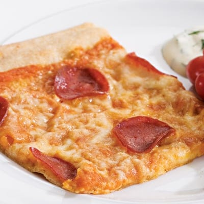

Home Page
Low Calorie Pizza

Pizza is one of the best tasting dishes but can be loaded with calories and sodium.
Instead of removing it from a diet, you can follow this recipe and create a healthier alternative
that is just as good as the original.
Ingredients
- Low calorie tortilaa (Ole Extreme if available)
- Low sodium pizza sauce
- Turkey pepporoni
- Low fat shredded mozzarella cheese
How to Make a Low Calorie Pizza
- First Grab your low calorie tortilla and add about 2 tablespoons of your pizza sauce.
Spread the sauce around the whole torilla evenly.
- Sprinkle one cup of the shredded mozzarella cheese evenly around the tortilla.
- Add one serving (about 13 pieces) of the pepporoni.
- Bake in the oven at 350 degrees F for 5-8 minutes until the cheese looks nice and melted.
- Thats it, enjoy your low calorie pizza.